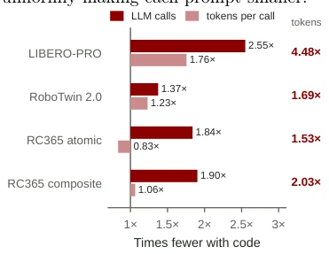
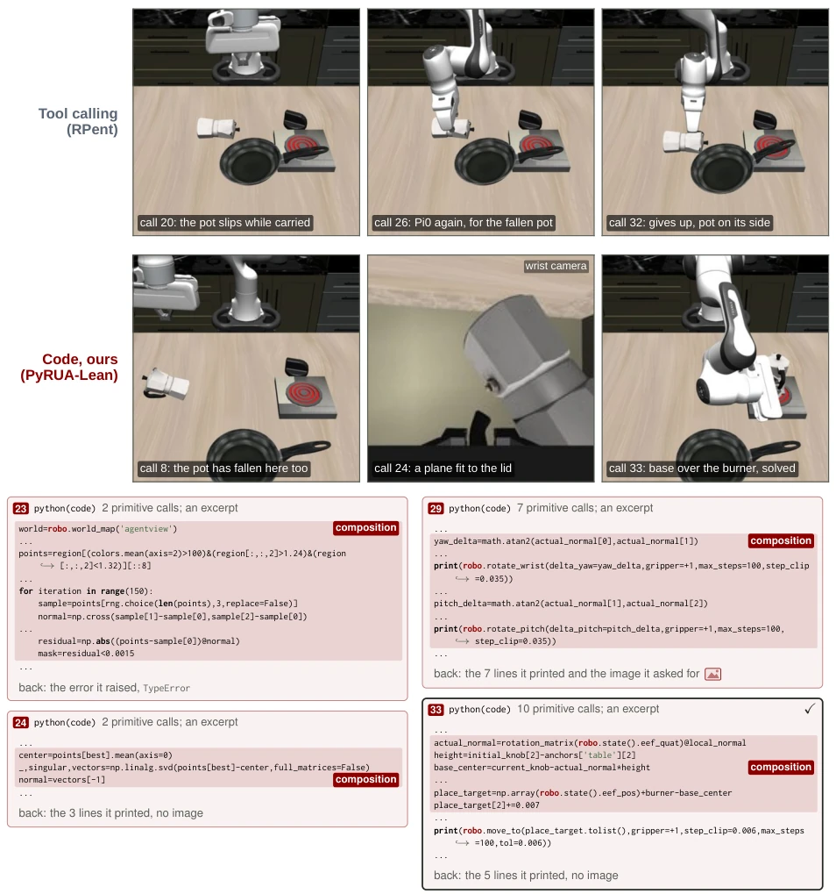
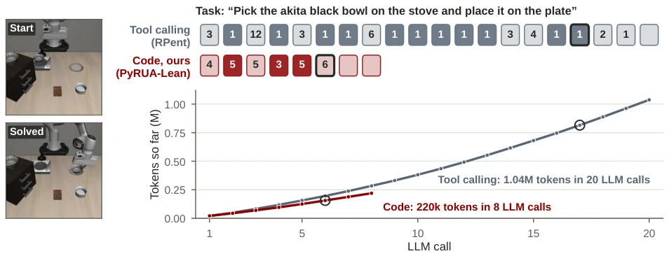
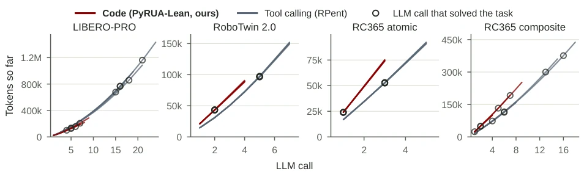
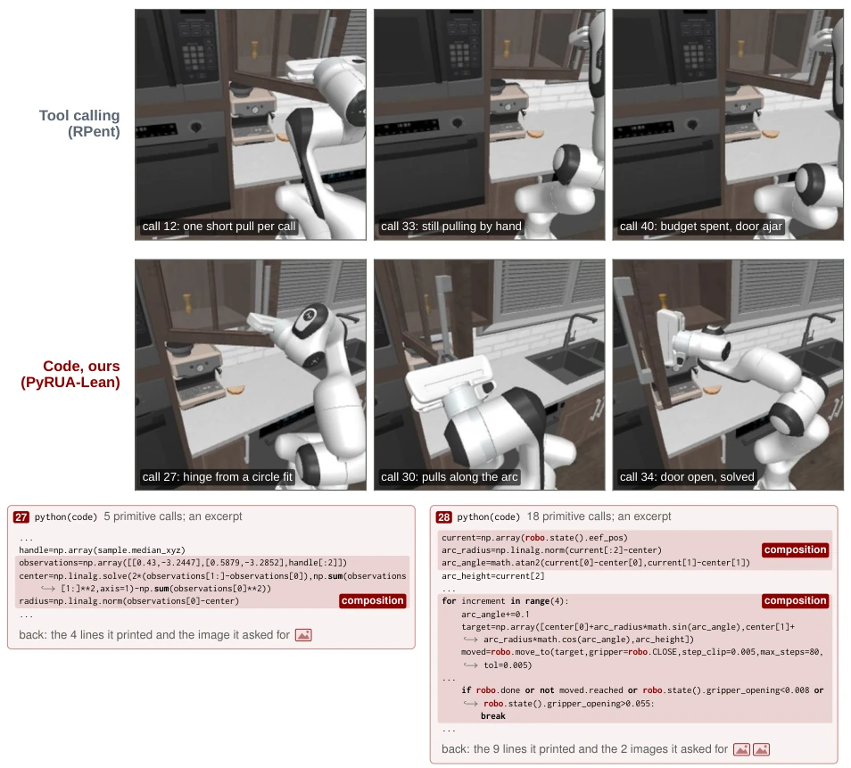

Figure 3 Success rate if every episode were stopped once its token consumption reached the budget on the horizontal axis. Dashed lines mark the budget at which each agent first reaches tool calling’s final success rate, with its value on the axis; the large number is their ratio. RC365: RoboCasa365.
Figure 2 PyRUA-Lean combines primitive composition with selective feedback. (a) The tool-calling agent invokes robot primitives through tool calls. Operations that depend on preceding results generally require another VLM turn, and motion calls automatically return images and state. (b) PyRUA-Lean instead generates Python cells that compose robot primitives with helper functions, conditional checks, and local retries. Intermediate execution stays within the runtime, while explicitly requested images and state messages are recorded and returned at cell end for replanning. (c) A recorded placement example illustrates both mechanisms: one PyRUA-Lean cell replaces baseline steps 14–17, reducing four LLM turns to one. The cell computes a placement target from scene geometry (compose), condition
Figure 1 PyRUA-Lean matches or exceeds tool calling’s success rate on each sub-suite and costs less on every benchmark. (a) Success rate on all 700 instances, tagged by task property (semantic: perturbed layouts, objects, goals); RoboTwin 2.0 split by skill from task names. (b, c) Input tokens and GPT-6 Astra list-price dollars per solved episode, on instances both agents solved; Avg: mean over all of them. RC365: RoboCasa365.

Figure 5 Token-savings decomposition on jointly solved instances. Tool-calling-to- PyRUA-Lean ratios quantify reductions in LLM calls (solid) and tokens per call (light); their product gives the total token-reduction factor (right). Ratios below 1× indicate in- creased usage by PyRUA-Lean.

Figure 8 An instance only code solved: LIBERO-PRO, “turn on the stove and put the moka pot on it” (10 swap, task 2, seed 3). Both agents turned the stove on and dropped the pot. Tool calling asked Pi0 to grasp the fallen pot four times and ended the episode; the code agent grasped it itself, fitted a plane to the points of its lid to find how it leans, turned it upright, and set its base, not the gripper, over the burner. Top: the recorded camera views after the LLM calls named. Bottom: the code agent’s cells, excerpts exactly as the model wrote them; “...” marks lines left out. The plane fit in call 23 raised an error (NumPy’s linear algebra refuses half-precision arrays); call 24 cast the points and ran it again.
其他图片Other Figures

Figure 6 The episode of Figure 2, whole. Top: each box is one LLM call; the number is how many tools (tool calling) or primitives (code) it called, dark boxes returned camera images, and the outlined box solved the task. Bottom: token consumption so far; circles mark the solving call, reached after 816k tokens with tool calling and 156k with code. Left: the agent-view camera at the start and when the task was solved.

Figure 7 Token consumption so far of the episodes in Table 5, five per benchmark, LLM call by LLM call; circles mark the solving call. On RoboTwin 2.0 and RoboCasa365’s atomic tasks the median episodes of both agents are nearly identical from task to task, so their lines overlap.

Figure 9 An instance only code solved: RoboCasa365 atomic, “Open the cabinet door.” (seed 4). Both agents located the door’s hinge. Tool calling pulled the handle a few centimeters per LLM call and was still pulling when its 40 calls ran out; the code agent took the hinge as the centre of the circle through three positions of the handle, two of which it copied from earlier outputs, and pulled along that arc in one cell, stopping if a move fell short or the grip slipped. The door opened, and a VLA call in call 34 completed the task. Top: the recorded camera views; bottom: the code agent’s cells, excerpts exactly as the model wrote them.